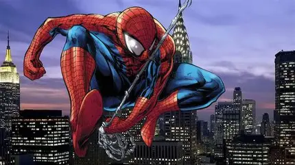

La vida personal de Parker no se ve beneficiada por la obtención de sus superpoderes: debe ayudar a su tía viuda a pagar el alquiler de su casa, es acosado por compañeros como Flash Thompson, incluso al obtener sus poderes continúa siendo su víctima, aunque menos que antes y tiene que lidiar con la personalidad explosiva del jefe de la editorial en la que trabaja, J. Jonah Jameson.[112][113][114] Un tiempo después, el joven se gradúa de la high school e ingresa a la Universidad Empire State,[115][116] en donde conoce a su mejor amigo Harry Osborn y a su novia Gwen Stacy.[117] Finalmente su tía le presenta a Mary Jane Watson.[114][118][119] Tras enterarse de que el padre de Harry es el Duende Verde, Peter considera abandonar su rol como vigilante.[120][121] Otro par de sucesos notables en ese período ocurren cuando George Stacy, el capitán del Departamento de Policía de Nueva York y padre de Gwen, muere durante un enfrentamiento entre el hombre araña y Doctor Octopus;[122] mientras que el primer encuentro de Spidey con el villano Kingpin ocurre cuando este último secuestra a Jameson para evitar que sigan difundiendo historias sobre sus socios criminales
inicio
infanciaadolecencia